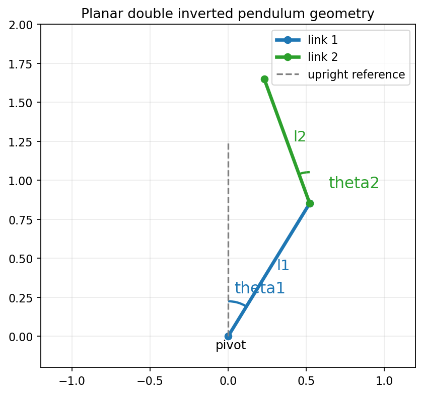

2025
Recursive Curve Extraction Tool for High-Amplitude Events Analysis in Historical Seismograms
Colin Cloos
Master's thesis, Ecole polytechnique de Louvain, academic year 2024-2025
Supervisors: Jacques Laurent and Christophe De Vleeschouwer
Personal website
Mathematical Engineer working at the intersection of mathematics, artificial intelligence, signal processing, and computational problem solving.
Biography
I am a mathematical engineer with a strong interest in applying mathematics, computation, and artificial intelligence to real-world challenges. My work spans signal processing, computer vision, scientific computing, and data-driven modeling.
My recent projects include the digitization and analysis of 20th-century historical seismograms, as well as the development of intelligent tools for structural monitoring and risk reduction. I enjoy translating complex technical questions into practical, robust solutions.
I continue to broaden my expertise through advanced training programs, including Neuromatch Academy in deep learning and CERN iCSC in high-performance computing, while exploring new ways mathematics and AI can generate meaningful impact.
Publications
2025
Colin Cloos
Master's thesis, Ecole polytechnique de Louvain, academic year 2024-2025
Supervisors: Jacques Laurent and Christophe De Vleeschouwer
Projects
This section is designed to host project pages that can combine text, images, videos, downloadable files, and embedded widgets in a simple static structure.

A visual-first project page with free-motion and LQR stabilization videos, intuition, and notebook access.
Open project page
An overview of the motivation, context, and objectives behind the digitization of historical analog seismograms.
Open project page
A focused page on the tracking framework, evaluation strategy, key findings, and future work from the thesis.
Open project pageContact
Email: clooscolin31@gmail.com
GitHub: github.com/ccloos
LinkedIn: linkedin.com/in/colin-cloos